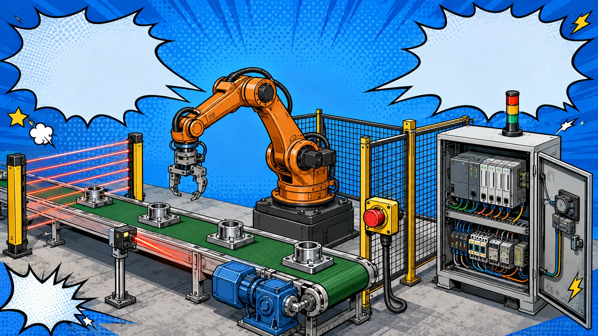

Fall A · Sensor meldet nichts
Das Werkstück fährt am Sensor vorbei. Die Sensor-LED bleibt dunkel.
Was prüfst du zuerst?
Die Anlage arbeitet wie ein Team: Sensoren melden, die SPS entscheidet, Aktoren bewegen – und die Sicherheit überwacht alles.

Tippe auf die gelben Nummern. So wird aus dem Plakat eine kleine digitale Roboterzelle.
Der Ablauf ist bewusst langsam. Beobachte, wann ein Signal entsteht und wie die SPS darauf reagiert.
Wichtig: Erst beobachten, dann entlang der Signalkette prüfen – nicht einfach Teile tauschen.
Das Werkstück fährt am Sensor vorbei. Die Sensor-LED bleibt dunkel.
Die SPS läuft, aber „Sicherheitskreis nicht freigegeben“ wird angezeigt.
Der Sensor schaltet und die SPS erkennt den Eingang. Der Aktor reagiert trotzdem nicht.
Sechs schnelle Fragen. Tippen, Ergebnis ansehen, fertig.